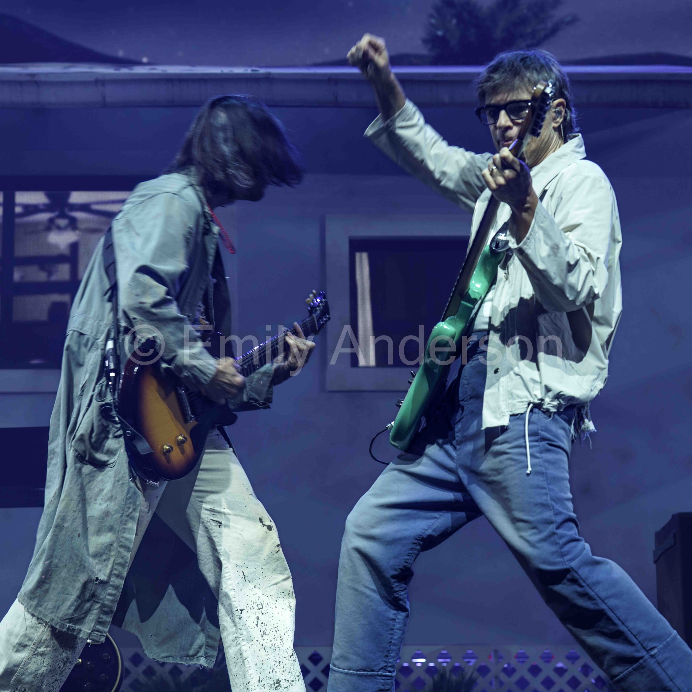

AWOLNATION is an American rock band from Los Angeles that was formed by Aaron Bruno in 2010. He was originally in a smaller band for 5 years called Under the Influence of Giants, until the band split and he went on to form AWOLNATION. Their first album was released on March 15, 2011 called Megalithic Symphony. Their first song to peak was the single "Sail" which sold 10,000,000 copies in the United states and ranked high on many song platforms.

Image from: Spinning Platters
An interesting thing about AWOLNATION is how their music style combines rock, electronic, and indie to create something unique. Aaron Bruno wanted the band to have a different sound from his previous projects, so he experimented with a variety of music styles. Over the years, AWOLNATION has released several successful albums and toured across the United States and other countries. The band's songs are often known for their energetic beats, emotional lyrics, and creative production. Because of their unique sound and memorable performances, AWOLNATION has built a strong fan base around the world.
Image from: Music Matters Magazine
AWOLNATION has made an impact on the music industry through their use of music in movies, television shows, and commercials. Their songs have helped create dramatic and emotional moments in different forms of media. Their music's intense sound is especially recognizable which makes it perfect for action scenes, sports events, and high-energy advertisements or just pumped up moments in everyday life.